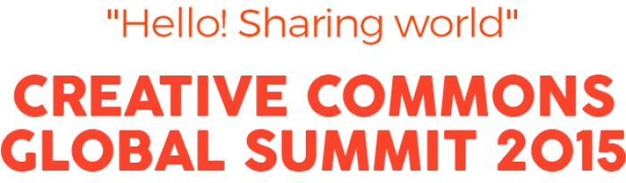

The Creative Commons Global Summit , held every two years, is a place where CC activists from all over the world and experts, scholars and activists from all walks of life who support and practice open culture gather together.
2015.10.15(THU) ~ 16(FRI)
@ National Museum of Karea, Art Center Nabi and more